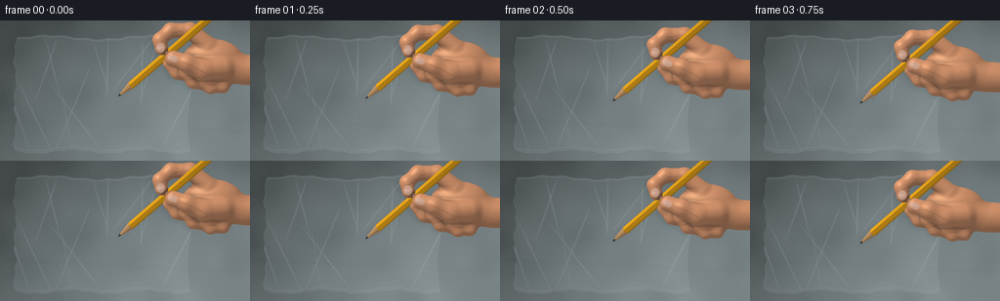
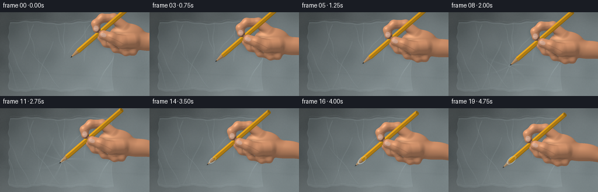
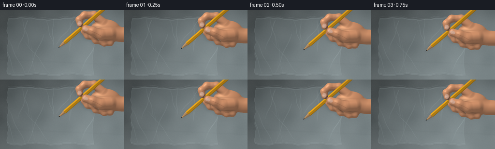

CODING AGENTS AS PIXEL WORLD MODELS
traex/GPT-6.1-Sol · mechanics_0029
点击播放 · 原生 RGB 像素
逐轮保存的候选
回放视频、检查图与代码变化。
每份候选均可单独播放。实际图片检查记录在下方工具轨迹中。
候选 01播放与检查图
点击播放 · 原生 RGB 像素

展开代码变化
--- 上一保存版本
+++ 本次保存版本
@@ -0,0 +1,299 @@
+import json
+from pathlib import Path
+import numpy as np
+from PIL import Image, ImageDraw, ImageFilter
+from scipy.ndimage import gaussian_filter, map_coordinates
+import artifact_io
+
+ROOT=Path(__file__).resolve().parent
+SPEC=json.loads((ROOT/'task_spec.json').read_text())
+W,H=SPEC['width'],SPEC['height']; S=3; WW,HH=W*S,H*S
+rng=np.random.default_rng(71)
+# The scene is an orthographic close-up, measured in centimetre-like units.
+x=np.linspace(-3.2,3.2,WW,endpoint=False)+3.2/WW
+y=np.linspace(1.8,-1.8,HH,endpoint=False)-1.8/HH
+X,Y=np.meshgrid(x,y)
+BACK=np.array([.65,.56,.52]); BACK/=np.linalg.norm(BACK)
+C=np.array([-.5,-.43,0.])
+LIGHT=np.array([-.46,.66,.60]); LIGHT/=np.linalg.norm(LIGHT)
+
+# Rounded anatomical volumes: palm, wrist, curled index and supporting fingers.
+ells=[((1.14,-.20,-.10),(.79,.57,.36)),((2.08,-.43,-.16),(.88,.39,.32))]
+caps=[
+ ((1.56,-.32,-.13),(2.87,-.59,-.18),.345,.285),
+ # index finger: a continuous curled arch above the pencil
+ ((1.01,.21,-.04),(.57,.58,.0),.235,.205),
+ ((.57,.58,.0),(.06,.59,.09),.205,.185),
+ ((.06,.59,.09),(-.22,.35,.21),.185,.172),
+ ((-.22,.35,.21),(-.17,.12,.24),.172,.17),
+ # middle finger under the shaft
+ ((1.05,-.24,-.22),(.64,-.57,-.19),.235,.20),
+ ((.64,-.57,-.19),(.24,-.48,-.12),.20,.18),
+ ((.24,-.48,-.12),(.02,-.25,-.12),.18,.16),
+ # ring finger and little finger curled into the palm
+ ((1.39,-.40,-.15),(1.02,-.79,-.12),.205,.185),
+ ((1.02,-.79,-.12),(.64,-.73,-.04),.185,.165),
+ ((.64,-.73,-.04),(.48,-.51,.05),.165,.16),
+ ((1.66,-.43,-.18),(1.40,-.86,-.15),.173,.15),
+ ((1.40,-.86,-.15),(1.09,-.90,-.03),.15,.13),
+ ((1.09,-.90,-.03),(.97,-.72,.04),.13,.125),
+ # fleshy thumb crossing the front of the pencil
+ ((1.40,-.36,.06),(.90,-.42,.24),.30,.265),
+ ((.90,-.42,.24),(.48,-.25,.36),.265,.22),
+ ((.48,-.25,.36),(.12,-.13,.35),.22,.205),
+]
+
+def smoothmin(a,b,k=.095):
+ h=np.clip(.5+.5*(b-a)/k,0,1)
+ return b*(1-h)+a*h-k*h*(1-h)
+
+def sdf(p):
+ d=np.full(p.shape[:-1],10.,dtype=np.float32)
+ for center,radius in ells:
+ q=p-np.array(center,dtype=np.float32); r=np.array(radius,dtype=np.float32)
+ k0=np.sqrt(np.sum((q/r)**2,axis=-1)); k1=np.sqrt(np.sum((q/(r*r))**2,axis=-1))
+ e=k0*(k0-1)/(k1+1.e-8)
+ d=smoothmin(d,e,.16)
+ for a,b,r1,r2 in caps:
+ a=np.array(a,dtype=np.float32); b=np.array(b,dtype=np.float32); ba=b-a
+ pa=p-a; h=np.clip(np.sum(pa*ba,axis=-1)/np.dot(ba,ba),0,1)
+ z=pa-h[...,None]*ba
+ e=np.sqrt(np.sum(z*z,axis=-1))-(r1+(r2-r1)*h)
+ d=smoothmin(d,e,.085)
+ return d
+
+# Render the rigid grip once, with per-pixel depth, so all twenty frames have
+# exactly the same fingers and the pencil stays locked between them.
+GX,GY=np.meshgrid(np.linspace(-.6,3.25,463),np.linspace(1.02,-1.20,267))
+shape=GX.shape
+px=GX.ravel().astype(np.float32); py=GY.ravel().astype(np.float32)
+z=np.full(px.shape,1.1,dtype=np.float32); active=np.ones(px.shape,bool); hit=np.zeros(px.shape,bool)
+for it in range(90):
+ ids=np.flatnonzero(active)
+ if not len(ids): break
+ p=np.stack([px[ids],py[ids],z[ids]],axis=1)
+ ds=sdf(p)
+ h=ds<.0012
+ hit[ids[h]]=True; active[ids[h]]=False
+ adv=ids[~h]; z[adv]-=np.maximum(ds[~h]*.82,.001)
+ active[z < -.9]=False
+ids=np.flatnonzero(hit); p=np.stack([px[ids],py[ids],z[ids]],axis=1)
+eps=.0015
+normal=np.stack([(sdf(p+np.eye(3,dtype=np.float32)[i]*eps)-sdf(p-np.eye(3,dtype=np.float32)[i]*eps))/(2*eps) for i in range(3)],axis=1)
+normal/=np.maximum(np.linalg.norm(normal,axis=1,keepdims=True),1.e-6)
+diff=np.maximum(normal@LIGHT,0)
+# soft self-occlusion, subsurface warmth and a broad skin specular highlight
+oc=np.ones(len(p),dtype=np.float32)
+for dist,weight in [(.08,.22),(.18,.20),(.36,.14)]:
+ obstruction=np.maximum(dist-sdf(p+normal*dist),0)/dist
+ oc-=obstruction*weight
+half=LIGHT+np.array([0,0,1]); half/=np.linalg.norm(half)
+spec=np.maximum(normal@half,0)**28
+skin=np.array([194.,130.,91.])[None,:]*(.49+.49*diff[:,None])*oc[:,None]
+skin+=np.array([41.,33.,28.])[None,:]+spec[:,None]*np.array([42,37,29])
+# Fine grain is fixed to the skin, not animated noise.
+noise=np.sin(p[:,0]*131+p[:,1]*73)*np.sin(p[:,1]*157-p[:,2]*101)
+skin+=noise[:,None]*1.25
+# Fine joint folds on curled fingers and thumb, laid on the curved surface.
+for cx,cy,angle,length in [(.48,-.27,-.4,.16),(.81,-.43,-.5,.19),(-.14,.31,.5,.12),(.23,.55,.12,.14),(.63,-.65,.4,.12),(1.1,-.81,.0,.1)]:
+ qx=p[:,0]-cx; qy=p[:,1]-cy
+ u=qx*np.cos(angle)+qy*np.sin(angle); v=-qx*np.sin(angle)+qy*np.cos(angle)
+ crease=np.exp(-(u/length)**8-(v/.013)**2)*np.maximum(normal[:,2],0)
+ skin-=crease[:,None]*np.array([22,18,13])
+handrgb=np.zeros((len(px),3),np.float32); handrgb[ids]=skin
+handdepth=np.full(len(px),-100.,dtype=np.float32); handdepth[ids]=z[ids]
+# A subtle nail on the rounded thumb and a smaller index nail, with soft cuticles.
+for cx,cy,theta,rx,ry in [(.115,-.13,-.38,.135,.092),(-.19,.15,.17,.105,.13)]:
+ qx=p[:,0]-cx; qy=p[:,1]-cy
+ u=qx*np.cos(theta)+qy*np.sin(theta); v=-qx*np.sin(theta)+qy*np.cos(theta)
+ r=(u/rx)**2+(v/ry)**2
+ m=np.clip((1-r)*13,0,1)*np.clip((normal[:,2]-.50)*5,0,1)
+ nail=np.array([217.,169.,144.])[None,:]*(.70+.27*diff[:,None])+15
+ nail+=np.exp(-((u+.04)/.08)**2-(v/.017)**2)[:,None]*15
+ # fine pale free edge, no conspicuous artificial manicure
+ nail+=np.exp(-((u+rx*.75)/.013)**2)[:,None]*7
+ handrgb[ids]=handrgb[ids]*(1-m[:,None])+nail*m[:,None]
+handrgb=handrgb.reshape(*shape,3); handdepth=handdepth.reshape(shape)
+
+# Pencil: a hexagonal painted wooden shaft, exposed cedar taper and graphite.
+# A small custom orthographic triangle rasterizer provides exact solid depth.
+def triangle(buf,depth,verts,colors):
+ vv=np.asarray(verts); sx=(vv[:,0]+3.2)/6.4*WW-.5; sy=(1.8-vv[:,1])/3.6*HH-.5
+ xmin=max(0,int(np.floor(sx.min()))); xmax=min(WW-1,int(np.ceil(sx.max())))
+ ymin=max(0,int(np.floor(sy.min()))); ymax=min(HH-1,int(np.ceil(sy.max())))
+ if xmax<xmin or ymax<ymin:return
+ xx,yy=np.meshgrid(np.arange(xmin,xmax+1),np.arange(ymin,ymax+1))
+ den=(sy[1]-sy[2])*(sx[0]-sx[2])+(sx[2]-sx[1])*(sy[0]-sy[2])
+ if abs(den)<1.e-9:return
+ a=((sy[1]-sy[2])*(xx-sx[2])+(sx[2]-sx[1])*(yy-sy[2]))/den
+ b=((sy[2]-sy[0])*(xx-sx[2])+(sx[0]-sx[2])*(yy-sy[2]))/den; c=1-a-b
+ zz=a*vv[0,2]+b*vv[1,2]+c*vv[2,2]
+ dd=depth[ymin:ymax+1,xmin:xmax+1]
+ m=(a>=-1.e-5)&(b>=-1.e-5)&(c>=-1.e-5)&(zz>dd)
+ if not m.any():return
+ col=a[...,None]*colors[0]+b[...,None]*colors[1]+c[...,None]*colors[2]
+ dd[m]=zz[m]; buf[ymin:ymax+1,xmin:xmax+1][m]=col[m]
+
+pencol=np.zeros((HH,WW,3),np.float32); pendep=np.full((HH,WW),-100.,np.float32)
+U=np.cross(BACK,[0,0,1]); U/=np.linalg.norm(U); V=np.cross(BACK,U)
+# Relative to the gripping point, the tip is two units down the shaft.
+TIP=-2*BACK
+sections=[(0.,.003),(.13,.034),(.55,.108),(4.15,.108)]
+for seg in range(3):
+ t0,r0=sections[seg]; t1,r1=sections[seg+1]
+ N=6 if seg==2 else 36
+ for j in range(N):
+ aa=j*2*np.pi/N+.2; bb=(j+1)*2*np.pi/N+.2
+ radial0=U*np.cos(aa)+V*np.sin(aa); radial1=U*np.cos(bb)+V*np.sin(bb)
+ va=TIP+BACK*t0+r0*radial0; vb=TIP+BACK*t0+r0*radial1
+ vc=TIP+BACK*t1+r1*radial1; vd=TIP+BACK*t1+r1*radial0
+ nr=(radial0+radial1)/2 - BACK*(r1-r0)/(t1-t0); nr/=np.linalg.norm(nr)
+ li=max(np.dot(nr,LIGHT),0)
+ if seg==2:
+ base=np.array([236.,168.,26.]); col=base*(.56+.44*li)+np.array([10,7,3])
+ shine=max(np.dot(nr,half),0)**55; col+=shine*75
+ elif seg==1:
+ grain=4*np.sin(j*4.6)+3*np.sin(j*11.4)
+ col=np.array([200.,150.,96.])*(.59+.40*li)+grain+15
+ else:
+ col=np.array([43.,42.,40.])*(.65+.35*li)+max(np.dot(nr,half),0)**26*52
+ colors=np.array([col]*3)
+ triangle(pencol,pendep,[va,vb,vc],colors); triangle(pencol,pendep,[va,vc,vd],colors)
+# Small understated dark printed bands, placed on the painted face along shaft.
+# The body itself is deliberately unbranded, retaining its familiar yellow facets.
+
+# A softly lit, out-of-focus neutral worktop behind the bag.
+noise=rng.normal(0,1,(HH,WW))
+noise=gaussian_filter(noise,1.5)
+broad=gaussian_filter(rng.normal(0,1,(HH,WW)),35); broad/=np.std(broad)
+grad=.9+.07*X-.075*Y
+bg=np.stack([118*grad+3*broad,128*grad+3*broad,130*grad+3*broad],axis=-1)
+bg+=noise[...,None]*3
+# Quiet distant shadow and defocused worktop streaks.
+bg-=np.exp(-((Y+.9+.045*X)/.04)**2)[...,None]*2
+bg-=np.exp(-((X-2.7)/.8)**2-((Y+.65)/1.9)**2)[...,None]*8
+
+# A continuous bag outline, welded edges and stable crumpled film reflections.
+left=-2.82+.028*np.sin(Y*6)+.020*np.sin(Y*15)
+right=1.65+.052*np.sin(Y*3+1)
+top=1.38+.05*np.sin(X*2.4)+.015*np.sin(X*11)
+bottom=-1.57+.045*np.sin(X*3.5)+.013*np.sin(X*13)
+edgeDist=np.minimum.reduce([X-left,right-X,top-Y,Y-bottom])
+mask=np.clip(edgeDist/(.016),0,1)
+# Stable crease paths in material coordinates, strongest near the edges.
+creases=[]
+for i in range(13):
+ ax=rng.uniform(-2.65,1.45); ay=rng.choice([-1.5,1.3])+rng.uniform(-.05,.05)
+ bx=ax+rng.uniform(-1.3,1.3); by=ay*(-.20)+rng.uniform(-.3,.3)
+ creases.append((ax,ay,bx,by,rng.uniform(.012,.025),rng.uniform(.7,1.3)))
+static_h=.020*np.sin(2.6*X+1.5*Y)+.012*np.sin(5.5*X-3*Y)
+crease_light=np.zeros_like(X)
+for ax,ay,bx,by,width,strength in creases:
+ dx=bx-ax;dy=by-ay; t=np.clip(((X-ax)*dx+(Y-ay)*dy)/(dx*dx+dy*dy),0,1)
+ u=np.hypot(X-(ax+t*dx),Y-(ay+t*dy))
+ env=np.sin(np.pi*(.05+.90*t))**.6
+ line=np.exp(-(u/width)**2)*env*strength
+ static_h+=line*.024
+ crease_light+=line*12
+ crease_light-=np.exp(-((u-width*1.5)/(width*.6))**2)*env*strength*2.5
+
+
+def sample_hand(g):
+ ix=(X-g[0]+.6)/(3.85)*(shape[1]-1)
+ iy=(1.02-(Y-g[1]))/(2.22)*(shape[0]-1)
+ coords=np.array([iy,ix])
+ dep=map_coordinates(handdepth,coords,order=1,mode='constant',cval=-100)+g[2]
+ rgb=np.stack([map_coordinates(handrgb[...,i],coords,order=1,mode='constant',cval=0) for i in range(3)],axis=-1)
+ return rgb,dep
+
+def sample_pencil(g):
+ coords=np.array([(1.8-(Y-g[1]))/3.6*HH-.5,((X-g[0])+3.2)/6.4*WW-.5])
+ dep=map_coordinates(pendep,coords,order=1,mode='constant',cval=-100)+g[2]
+ rgb=np.stack([map_coordinates(pencol[...,i],coords,order=1,mode='constant',cval=0) for i in range(3)],axis=-1)
+ return rgb,dep
+
+frames=[]
+for f in range(SPEC['frames']):
+ # The first second approaches; the next two seconds stretch the film;
+ # the last two continue through the small puncture without breaking away.
+ key_f=[0,4,10,12,19]; key_s=[.48,.045,-.22,-.33,-.62]
+ advance=np.interp(f,key_f,key_s)
+ tip=C+BACK*advance; grip=tip+BACK*2
+ hcol,hdep=sample_hand(grip); pcol,pdep=sample_pencil(grip)
+ hm=hdep>-.98; pm=pdep>-2
+ objectdep=np.where(hm&(~pm|(hdep>pdep)),hdep,pdep)
+ objectmask=hm|pm
+ objectcol=np.where((hm&(~pm|(hdep>pdep)))[...,None],hcol,pcol)
+ # Film follows the sharpened point until the tensile limit is reached.
+ punctured=f>=11
+ stretch=max(0,-advance)
+ release=1 if not punctured else max(.05,1-(f-10)/3)
+ cx=C[0] if punctured else tip[0]
+ cy=C[1] if punctured else tip[1]
+ dx=X-cx;dy=Y-cy; rr=np.sqrt(dx*dx+dy*dy)
+ theta=np.arctan2(dy,dx)
+ depthdent=-stretch*BACK[2]*release
+ dent=depthdent*np.exp(-(rr/.44)**1.1)
+ deformation=min(stretch/.24,1)*release
+ # Radial tension lines run from the contact to the existing folds.
+ waves=(.55+.45*np.sin(9*theta+rr*1.4))**14
+ radial=waves*np.exp(-rr/0.55)*(1-np.exp(-(rr/.055)**2))*deformation
+ bagz=static_h+dent+radial*.023
+ dyz,dxz=np.gradient(bagz,3.6/HH,6.4/WW); dyz=-dyz
+ nx=-dxz;ny=-dyz;nz=np.ones_like(X)
+ norm=np.sqrt(nx*nx+ny*ny+1); nx/=norm;ny/=norm;nz/=norm
+ dot=np.maximum(nx*half[0]+ny*half[1]+nz*half[2],0)
+ shine=dot**50
+ # Plastic is predominantly transparent, with pearly reflections and folds.
+ reflection=shine*26+crease_light+radial*30
+ filmcolor=np.stack([170+reflection,188+reflection,191+reflection],axis=-1)
+ alpha=(.135+shine*.17+np.clip(crease_light/95,0,.13)+radial*.2)*mask
+ # Bag perimeter: thin irregular highlights, a double heat-weld at its base.
+ rim=np.exp(-(edgeDist/.017)**2)*mask
+ seam=np.exp(-((Y-bottom-.075)/.011)**2)*mask
+ seam2=np.exp(-((Y-bottom-.11)/.006)**2)*mask
+ lip=np.exp(-((Y-top+.045)/.014)**2)*mask
+ reflection_extra=rim*40+seam*25+seam2*13+lip*24
+ filmcolor+=reflection_extra[...,None]
+ alpha+=np.clip((rim*.14+seam*.06+lip*.09),0,.2)
+ # Contact whitening and a little elliptical opening around the pencil.
+ opening=np.zeros_like(X)
+ ring=np.zeros_like(X)
+ if punctured:
+ penlen=max(-advance,0)
+ radius=min(.108,.003+penlen*(.108/.55))
+ # Cross-section on the film plane is elongated along the oblique shaft.
+ u=(dx*BACK[0]+dy*BACK[1])/np.hypot(BACK[0],BACK[1])
+ v=(-dx*BACK[1]+dy*BACK[0])/np.hypot(BACK[0],BACK[1])
+ er=np.sqrt((u/(radius/BACK[2]))**2+(v/radius)**2)
+ opening=np.clip((1-er)*8,0,1)*mask
+ ring=np.exp(-((er-1.03)/.17)**2)*mask
+ filmcolor+=ring[...,None]*47
+ alpha=np.maximum(alpha,ring*.63)
+ alpha*=1-opening
+ else:
+ ring=np.exp(-((rr-.035)/.024)**2)*deformation
+ filmcolor+=ring[...,None]*35; alpha+=ring*.2
+ # Cast a soft shadow on the sheet; point and hand shadows remain attached.
+ projected=gaussian_filter(objectmask.astype(float),8)
+ shadow=map_coordinates(projected,np.array([np.indices((HH,WW))[0]-5,np.indices((HH,WW))[1]+7]),order=1,mode='nearest')
+ base=bg.copy()-shadow[...,None]*mask[...,None]*13
+ # Objects behind the translucent surface first, then bag, then foreground.
+ behind=objectmask&(objectdep<bagz)&(mask>.1)
+ base=np.where(behind[...,None],objectcol,base)
+ base=base*(1-alpha[...,None])+filmcolor*alpha[...,None]
+ foreground=objectmask&(~behind|(opening>.5))
+ base=np.where(foreground[...,None],objectcol,base)
+ # Light contact rim belongs in front of the wood, making penetration legible.
+ if punctured:
+ front_rim=ring*.24*(~hm)
+ base=base*(1-front_rim[...,None])+np.array([213,226,224])*front_rim[...,None]
+ # Mild photographic lens falloff and restrained camera sensor grain.
+ vignette=1-.075*((X/3.6)**2+(Y/2.4)**2)
+ base*=vignette[...,None]
+ base+=rng.normal(0,.32,base.shape)
+ im=Image.fromarray(np.uint8(np.clip(base,0,255))).resize((W,H),Image.Resampling.LANCZOS)
+ frames.append(np.asarray(im))
+frames=np.stack(frames)
+artifact_io.save(frames,ROOT)
+print('Saved',frames.shape,'RGB frames')
候选 02播放与检查图
点击播放 · 原生 RGB 像素


展开代码变化
--- 上一保存版本
+++ 本次保存版本
@@ -190,11 +190,13 @@
crease_light=np.zeros_like(X)
for ax,ay,bx,by,width,strength in creases:
dx=bx-ax;dy=by-ay; t=np.clip(((X-ax)*dx+(Y-ay)*dy)/(dx*dx+dy*dy),0,1)
- u=np.hypot(X-(ax+t*dx),Y-(ay+t*dy))
+ bend=.045*np.sin(t*np.pi)*np.sin(t*7+ax*3)
+ u=np.abs(((X-ax)*dy-(Y-ay)*dx)/np.hypot(dx,dy)-bend)
+ u=np.where((t<.0001)|(t>.9999),np.hypot(X-(ax+t*dx),Y-(ay+t*dy)),u)
env=np.sin(np.pi*(.05+.90*t))**.6
line=np.exp(-(u/width)**2)*env*strength
static_h+=line*.024
- crease_light+=line*12
+ crease_light+=line*8
crease_light-=np.exp(-((u-width*1.5)/(width*.6))**2)*env*strength*2.5
@@ -246,6 +248,10 @@
shine=dot**50
# Plastic is predominantly transparent, with pearly reflections and folds.
reflection=shine*26+crease_light+radial*30
+ # Soft shading across the stretched dimple shows the inward tent in the film.
+ hollow=np.exp(-(rr/.23)**2)*deformation*9
+ tension_crescent=np.exp(-((rr-.17)/.075)**2)*deformation*np.maximum((-dx+dy)/(rr+1.e-5),0)*11
+ reflection=reflection-hollow+tension_crescent
filmcolor=np.stack([170+reflection,188+reflection,191+reflection],axis=-1)
alpha=(.135+shine*.17+np.clip(crease_light/95,0,.13)+radial*.2)*mask
# Bag perimeter: thin irregular highlights, a double heat-weld at its base.
@@ -253,7 +259,12 @@
seam=np.exp(-((Y-bottom-.075)/.011)**2)*mask
seam2=np.exp(-((Y-bottom-.11)/.006)**2)*mask
lip=np.exp(-((Y-top+.045)/.014)**2)*mask
- reflection_extra=rim*40+seam*25+seam2*13+lip*24
+ # The near and far layers of the open bag have separate wavy lips.
+ rear_top=top+.045+.025*np.sin(X*7+1)
+ rear_lip=np.exp(-((Y-rear_top)/.009)**2)*(X>left)*(X<right)
+ side_weld=(np.exp(-((X-left-.046)/.009)**2)+np.exp(-((X-right+.042)/.009)**2))*mask
+ gusset=np.exp(-((Y-bottom-.18-.02*np.sin(X*6))/.025)**2)*mask*.4
+ reflection_extra=rim*40+seam*25+seam2*13+lip*24+side_weld*14+gusset*15
filmcolor+=reflection_extra[...,None]
alpha+=np.clip((rim*.14+seam*.06+lip*.09),0,.2)
# Contact whitening and a little elliptical opening around the pencil.
@@ -278,6 +289,7 @@
projected=gaussian_filter(objectmask.astype(float),8)
shadow=map_coordinates(projected,np.array([np.indices((HH,WW))[0]-5,np.indices((HH,WW))[1]+7]),order=1,mode='nearest')
base=bg.copy()-shadow[...,None]*mask[...,None]*13
+ base+=rear_lip[...,None]*13
# Objects behind the translucent surface first, then bag, then foreground.
behind=objectmask&(objectdep<bagz)&(mask>.1)
base=np.where(behind[...,None],objectcol,base)
可观测工具轨迹
实际执行的命令与返回图片。
命令 1exit 0
/bin/bash -lc "ls -la && cat prompt.txt && printf '\\n---RULES---\\n' && cat GENERATION_RULES.md && printf '\\n---SPEC---\\n' && cat task_spec.json"
命令 2exit 0
/bin/bash -lc "cat artifact_io.py && python - <<'PY'
import PIL,numpy,scipy
print('available',PIL.__version__,numpy.__version__,scipy.__version__)
PY"命令 3exit 0
/bin/bash -lc "cat > generate.py <<'PY'
import json
from pathlib import Path
import numpy as np
from PIL import Image, ImageDraw, ImageFilter
from scipy.ndimage import gaussian_filter, map_coordinates
import artifact_io
ROOT=Path(__file__).resolve().parent
SPEC=json.loads((ROOT/'task_spec.json').read_text())
W,H=SPEC['width'],SPEC['height']; S=3; WW,HH=W*S,H*S
rng=np.random.default_rng(71)
# The scene is an orthographic close-up, measured in centimetre-like units.
x=np.linspace(-3.2,3.2,WW,endpoint=False)+3.2/WW
y=np.linspace(1.8,-1.8,HH,endpoint=False)-1.8/HH
X,Y=np.meshgrid(x,y)
BACK=np.array([.65,.56,.52]); BACK/=np.linalg.norm(BACK)
C=np.array([-.5,-.43,0.])
LIGHT=np.array([-.46,.66,.60]); LIGHT/=np.linalg.norm(LIGHT)
# Rounded anatomical volumes: palm, wrist, curled index and supporting fingers.
ells=[((1.14,-.20,-.10),(.79,.57,.36)),((2.08,-.43,-.16),(.88,.39,.32))]
caps=[
((1.56,-.32,-.13),(2.87,-.59,-.18),.345,.285),
# index finger: a continuous curled arch above the pencil
((1.01,.21,-.04),(.57,.58,.0),.235,.205),
((.57,.58,.0),(.06,.59,.09),.205,.185),
((.06,.59,.09),(-.22,.35,.21),.185,.172),
((-.22,.35,.21),(-.17,.12,.24),.172,.17),
# middle finger under the shaft
((1.05,-.24,-.22),(.64,-.57,-.19),.235,.20),
((.64,-.57,-.19),(.24,-.48,-.12),.20,.18),
((.24,-.48,-.12),(.02,-.25,-.12),.18,.16),
# ring finger and little finger curled into the palm
((1.39,-.40,-.15),(1.02,-.79,-.12),.205,.185),
((1.02,-.79,-.12),(.64,-.73,-.04),.185,.165),
((.64,-.73,-.04),(.48,-.51,.05),.165,.16),
((1.66,-.43,-.18),(1.40,-.86,-.15),.173,.15),
((1.40,-.86,-.15),(1.09,-.90,-.03),.15,.13),
((1.09,-.90,-.03),(.97,-.72,.04),.13,.125),
# fleshy thumb crossing the front of the pencil
((1.40,-.36,.06),(.90,-.42,.24),.30,.265),
((.90,-.42,.24),(.48,-.25,.36),.265,.22),
((.48,-.25,.36),(.12,-.13,.35),.22,.205),
]
def smoothmin(a,b,k=.095):
h=np.clip(.5+.5*(b-a)/k,0,1)
return b*(1-h)+a*h-k*h*(1-h)
def sdf(p):
d=np.full(p.shape[:-1],10.,dtype=np.float32)
for center,radius in ells:
q=p-np.array(center,dtype=np.float32); r=np.array(radius,dtype=np.float32)
k0=np.sqrt(np.sum((q/r)**2,axis=-1)); k1=np.sqrt(np.sum((q/(r*r))**2,axis=-1))
e=k0*(k0-1)/(k1+1.e-8)
d=smoothmin(d,e,.16)
for a,b,r1,r2 in caps:
a=np.array(a,dtype=np.float32); b=np.array(b,dtype=np.float32); ba=b-a
pa=p-a; h=np.clip(np.sum(pa*ba,axis=-1)/np.dot(ba,ba),0,1)
z=pa-h[...,None]*ba
e=np.sqrt(np.sum(z*z,axis=-1))-(r1+(r2-r1)*h)
d=smoothmin(d,e,.085)
return d
# Render the rigid grip once, with per-pixel depth, so all twenty frames have
# exactly the same fingers and the pencil stays locked between them.
GX,GY=np.meshgrid(np.linspace(-.6,3.25,463),np.linspace(1.02,-1.20,267))
shape=GX.shape
px=GX.ravel().astype(np.float32); py=GY.ravel().astype(np.float32)
z=np.full(px.shape,1.1,dtype=np.float32); active=np.ones(px.shape,bool); hit=np.zeros(px.shape,bool)
for it in range(90):
ids=np.flatnonzero(active)
if not len(ids): break
p=np.stack([px[ids],py[ids],z[ids]],axis=1)
ds=sdf(p)
h=ds<.0012
hit[ids[h]]=True; active[ids[h]]=False
adv=ids[~h]; z[adv]-=np.maximum(ds[~h]*.82,.001)
active[z < -.9]=False
ids=np.flatnonzero(hit); p=np.stack([px[ids],py[ids],z[ids]],axis=1)
eps=.0015
normal=np.stack([(sdf(p+np.eye(3,dtype=np.float32)[i]*eps)-sdf(p-np.eye(3,dtype=np.float32)[i]*eps))/(2*eps) for i in range(3)],axis=1)
normal/=np.maximum(np.linalg.norm(normal,axis=1,keepdims=True),1.e-6)
diff=np.maximum(normal@LIGHT,0)
# soft self-occlusion, subsurface warmth and a broad skin specular highlight
oc=np.ones(len(p),dtype=np.float32)
for dist,weight in [(.08,.22),(.18,.20),(.36,.14)]:
obstruction=np.maximum(dist-sdf(p+normal*dist),0)/dist
oc-=obstruction*weight
half=LIGHT+np.array([0,0,1]); half/=np.linalg.norm(half)
spec=np.maximum(normal@half,0)**28
skin=np.array([194.,130.,91.])[None,:]*(.49+.49*diff[:,None])*oc[:,None]
skin+=np.array([41.,33.,28.])[None,:]+spec[:,None]*np.array([42,37,29])
# Fine grain is fixed to the skin, not animated noise.
noise=np.sin(p[:,0]*131+p[:,1]*73)*np.sin(p[:,1]*157-p[:,2]*101)
skin+=noise[:,None]*1.25
# Fine joint folds on curled fingers and thumb, laid on the curved surface.
for cx,cy,angle,length in [(.48,-.27,-.4,.16),(.81,-.43,-.5,.19),(-.14,.31,.5,.12),(.23,.55,.12,.14),(.63,-.65,.4,.12),(1.1,-.81,.0,.1)]:
qx=p[:,0]-cx; qy=p[:,1]-cy
u=qx*np.cos(angle)+qy*np.sin(angle); v=-qx*np.sin(angle)+qy*np.cos(angle)
crease=np.exp(-(u/length)**8-(v/.013)**2)*np.maximum(normal[:,2],0)
skin-=crease[:,None]*np.array([22,18,13])
handrgb=np.zeros((len(px),3),np.float32); handrgb[ids]=skin
handdepth=np.full(len(px),-100.,dtype=np.float32); handdepth[ids]=z[ids]
# A subtle nail on the rounded thumb and a smaller index nail, with soft cuticles.
for cx,cy,theta,rx,ry in [(.115,-.13,-.38,.135,.092),(-.19,.15,.17,.105,.13)]:
qx=p[:,0]-cx; qy=p[:,1]-cy
u=qx*np.cos(theta)+qy*np.sin(theta); v=-qx*np.sin(theta)+qy*np.cos(theta)
r=(u/rx)**2+(v/ry)**2
m=np.clip((1-r)*13,0,1)*np.clip((normal[:,2]-.50)*5,0,1)
nail=np.array([217.,169.,144.])[None,:]*(.70+.27*diff[:,None])+15
nail+=np.exp(-((u+.04)/.08)**2-(v/.017)**2)[:,None]*15
# fine pale free edge, no conspicuous artificial manicure
nail+=np.exp(-((u+rx*.75)/.013)**2)[:,None]*7
handrgb[ids]=handrgb[ids]*(1-m[:,None])+nail*m[:,None]
handrgb=handrgb.reshape(*shape,3); handdepth=handdepth.reshape(shape)
# Pencil: a hexagonal painted wooden shaft, exposed cedar taper and graphite.
# A small custom orthographic triangle rasterizer provides exact solid depth.
def triangle(buf,depth,verts,colors):
vv=np.asarray(verts); sx=(vv[:,0]+3.2)/6.4*WW-.5; sy=(1.8-vv[:,1])/3.6*HH-.5
xmin=max(0,int(np.floor(sx.min()))); xmax=min(WW-1,int(np.ceil(sx.max())))
ymin=max(0,int(np.floor(sy.min()))); ymax=min(HH-1,int(np.ceil(sy.max())))
if xmax<xmin or ymax<ymin:return
xx,yy=np.meshgrid(np.arange(xmin,xmax+1),np.arange(ymin,ymax+1))
den=(sy[1]-sy[2])*(sx[0]-sx[2])+(sx[2]-sx[1])*(sy[0]-sy[2])
if abs(den)<1.e-9:return
a=((sy[1]-sy[2])*(xx-sx[2])+(sx[2]-sx[1])*(yy-sy[2]))/den
b=((sy[2]-sy[0])*(xx-sx[2])+(sx[0]-sx[2])*(yy-sy[2]))/den; c=1-a-b
zz=a*vv[0,2]+b*vv[1,2]+c*vv[2,2]
dd=depth[ymin:ymax+1,xmin:xmax+1]
m=(a>=-1.e-5)&(b>=-1.e-5)&(c>=-1.e-5)&(zz>dd)
if not m.any():return
col=a[...,None]*colors[0]+b[...,None]*colors[1]+c[...,None]*colors[2]
dd[m]=zz[m]; buf[ymin:ymax+1,xmin:xmax+1][m]=col[m]
pencol=np.zeros((HH,WW,3),np.float32); pendep=np.full((HH,WW),-100.,np.float32)
U=np.cross(BACK,[0,0,1]); U/=np.linalg.norm(U); V=np.cross(BACK,U)
# Relative to the gripping point, the tip is two units down the shaft.
TIP=-2*BACK
sections=[(0.,.003),(.13,.034),(.55,.108),(4.15,.108)]
for seg in range(3):
t0,r0=sections[seg]; t1,r1=sections[seg+1]
N=6 if seg==2 else 36
for j in range(N):
aa=j*2*np.pi/N+.2; bb=(j+1)*2*np.pi/N+.2
radial0=U*np.cos(aa)+V*np.sin(aa); radial1=U*np.cos(bb)+V*np.sin(bb)
va=TIP+BACK*t0+r0*radial0; vb=TIP+BACK*t0+r0*radial1
vc=TIP+BACK*t1+r1*radial1; vd=TIP+BACK*t1+r1*radial0
nr=(radial0+radial1)/2 - BACK*(r1-r0)/(t1-t0); nr/=np.linalg.norm(nr)
li=max(np.dot(nr,LIGHT),0)
if seg==2:
base=np.array([236.,168.,26.]); col=base*(.56+.44*li)+np.array([10,7,3])
shine=max(np.dot(nr,half),0)**55; col+=shine*75
elif seg==1:
grain=4*np.sin(j*4.6)+3*np.sin(j*11.4)
col=np.array([200.,150.,96.])*(.59+.40*li)+grain+15
else:
col=np.array([43.,42.,40.])*(.65+.35*li)+max(np.dot(nr,half),0)**26*52
colors=np.array([col]*3)
triangle(pencol,pendep,[va,vb,vc],colors); triangle(pencol,pendep,[va,vc,vd],colors)
# Small understated dark printed bands, placed on the painted face along shaft.
# The body itself is deliberately unbranded, retaining its familiar yellow facets.
# A softly lit, out-of-focus neutral worktop behind the bag.
noise=rng.normal(0,1,(HH,WW))
noise=gaussian_filter(noise,1.5)
broad=gaussian_filter(rng.normal(0,1,(HH,WW)),35); broad/=np.std(broad)
grad=.9+.07*X-.075*Y
bg=np.stack([118*grad+3*broad,128*grad+3*broad,130*grad+3*broad],axis=-1)
bg+=noise[...,None]*3
# Quiet distant shadow and defocused worktop streaks.
bg-=np.exp(-((Y+.9+.045*X)/.04)**2)[...,None]*2
bg-=np.exp(-((X-2.7)/.8)**2-((Y+.65)/1.9)**2)[...,None]*8
# A continuous bag outline, welded edges and stable crumpled film reflections.
left=-2.82+.028*np.sin(Y*6)+.020*np.sin(Y*15)
right=1.65+.052*np.sin(Y*3+1)
top=1.38+.05*np.sin(X*2.4)+.015*np.sin(X*11)
bottom=-1.57+.045*np.sin(X*3.5)+.013*np.sin(X*13)
edgeDist=np.minimum.reduce([X-left,right-X,top-Y,Y-bottom])
mask=np.clip(edgeDist/(.016),0,1)
# Stable crease paths in material coordinates, strongest near the edges.
creases=[]
for i in range(13):
ax=rng.uniform(-2.65,1.45); ay=rng.choice([-1.5,1.3])+rng.uniform(-.05,.05)
bx=ax+rng.uniform(-1.3,1.3); by=ay*(-.20)+rng.uniform(-.3,.3)
creases.append((ax,ay,bx,by,rng.uniform(.012,.025),rng.uniform(.7,1.3)))
static_h=.020*np.sin(2.6*X+1.5*Y)+.012*np.sin(5.5*X-3*Y)
crease_light=np.zeros_like(X)
for ax,ay,bx,by,width,strength in creases:
dx=bx-ax;dy=by-ay; t=np.clip(((X-ax)*dx+(Y-ay)*dy)/(dx*dx+dy*dy),0,1)
u=np.hypot(X-(ax+t*dx),Y-(ay+t*dy))
env=np.sin(np.pi*(.05+.90*t))**.6
line=np.exp(-(u/width)**2)*env*strength
static_h+=line*.024
crease_light+=line*12
crease_light-=np.exp(-((u-width*1.5)/(width*.6))**2)*env*strength*2.5
def sample_hand(g):
ix=(X-g[0]+.6)/(3.85)*(shape[1]-1)
iy=(1.02-(Y-g[1]))/(2.22)*(shape[0]-1)
coords=np.array([iy,ix])
dep=map_coordinates(handdepth,coords,order=1,mode='constant',cval=-100)+g[2]
rgb=np.stack([map_coordinates(handrgb[...,i],coords,order=1,mode='constant',cval=0) for i in range(3)],axis=-1)
return rgb,dep
def sample_pencil(g):
coords=np.array([(1.8-(Y-g[1]))/3.6*HH-.5,((X-g[0])+3.2)/6.4*WW-.5])
dep=map_coordinates(pendep,coords,order=1,mode='constant',cval=-100)+g[2]
rgb=np.stack([map_coordinates(pencol[...,i],coords,order=1,mode='constant',cval=0) for i in range(3)],axis=-1)
return rgb,dep
frames=[]
for f in range(SPEC['frames']):
# The first second approaches; the next two seconds stretch the film;
# the last two continue through the small puncture without breaking away.
key_f=[0,4,10,12,19]; key_s=[.48,.045,-.22,-.33,-.62]
advance=np.interp(f,key_f,key_s)
tip=C+BACK*advance; grip=tip+BACK*2
hcol,hdep=sample_hand(grip); pcol,pdep=sample_pencil(grip)
hm=hdep>-.98; pm=pdep>-2
objectdep=np.where(hm&(~pm|(hdep>pdep)),hdep,pdep)
objectmask=hm|pm
objectcol=np.where((hm&(~pm|(hdep>pdep)))[...,None],hcol,pcol)
# Film follows the sharpened point until the tensile limit is reached.
punctured=f>=11
stretch=max(0,-advance)
release=1 if not punctured else max(.05,1-(f-10)/3)
cx=C[0] if punctured else tip[0]
cy=C[1] if punctured else tip[1]
dx=X-cx;dy=Y-cy; rr=np.sqrt(dx*dx+dy*dy)
theta=np.arctan2(dy,dx)
depthdent=-stretch*BACK[2]*release
dent=depthdent*np.exp(-(rr/.44)**1.1)
deformation=min(stretch/.24,1)*release
# Radial tension lines run from the contact to the existing folds.
waves=(.55+.45*np.sin(9*theta+rr*1.4))**14
radial=waves*np.exp(-rr/0.55)*(1-np.exp(-(rr/.055)**2))*deformation
bagz=static_h+dent+radial*.023
dyz,dxz=np.gradient(bagz,3.6/HH,6.4/WW); dyz=-dyz
nx=-dxz;ny=-dyz;nz=np.ones_like(X)
norm=np.sqrt(nx*nx+ny*ny+1); nx/=norm;ny/=norm;nz/=norm
dot=np.maximum(nx*half[0]+ny*half[1]+nz*half[2],0)
shine=dot**50
# Plastic is predominantly transparent, with pearly reflections and folds.
reflection=shine*26+crease_light+radial*30
filmcolor=np.stack([170+reflection,188+reflection,191+reflection],axis=-1)
alpha=(.135+shine*.17+np.clip(crease_light/95,0,.13)+radial*.2)*mask
# Bag perimeter: thin irregular highlights, a double heat-weld at its base.
rim=np.exp(-(edgeDist/.017)**2)*mask
seam=np.exp(-((Y-bottom-.075)/.011)**2)*mask
seam2=np.exp(-((Y-bottom-.11)/.006)**2)*mask
lip=np.exp(-((Y-top+.045)/.014)**2)*mask
reflection_extra=rim*40+seam*25+seam2*13+lip*24
filmcolor+=reflection_extra[...,None]
alpha+=np.clip((rim*.14+seam*.06+lip*.09),0,.2)
# Contact whitening and a little elliptical opening around the pencil.
opening=np.zeros_like(X)
ring=np.zeros_like(X)
if punctured:
penlen=max(-advance,0)
radius=min(.108,.003+penlen*(.108/.55))
# Cross-section on the film plane is elongated along the oblique shaft.
u=(dx*BACK[0]+dy*BACK[1])/np.hypot(BACK[0],BACK[1])
v=(-dx*BACK[1]+dy*BACK[0])/np.hypot(BACK[0],BACK[1])
er=np.sqrt((u/(radius/BACK[2]))**2+(v/radius)**2)
opening=np.clip((1-er)*8,0,1)*mask
ring=np.exp(-((er-1.03)/.17)**2)*mask
filmcolor+=ring[...,None]*47
alpha=np.maximum(alpha,ring*.63)
alpha*=1-opening
else:
ring=np.exp(-((rr-.035)/.024)**2)*deformation
filmcolor+=ring[...,None]*35; alpha+=ring*.2
# Cast a soft shadow on the sheet; point and hand shadows remain attached.
projected=gaussian_filter(objectmask.astype(float),8)
shadow=map_coordinates(projected,np.array([np.indices((HH,WW))[0]-5,np.indices((HH,WW))[1]+7]),order=1,mode='nearest')
base=bg.copy()-shadow[...,None]*mask[...,None]*13
# Objects behind the translucent surface first, then bag, then foreground.
behind=objectmask&(objectdep<bagz)&(mask>.1)
base=np.where(behind[...,None],objectcol,base)
base=base*(1-alpha[...,None])+filmcolor*alpha[...,None]
foreground=objectmask&(~behind|(opening>.5))
base=np.where(foreground[...,None],objectcol,base)
# Light contact rim belongs in front of the wood, making penetration legible.
if punctured:
front_rim=ring*.24*(~hm)
base=base*(1-front_rim[...,None])+np.array([213,226,224])*front_rim[...,None]
# Mild photographic lens falloff and restrained camera sensor grain.
vignette=1-.075*((X/3.6)**2+(Y/2.4)**2)
base*=vignette[...,None]
base+=rng.normal(0,.32,base.shape)
im=Image.fromarray(np.uint8(np.clip(base,0,255))).resize((W,H),Image.Resampling.LANCZOS)
frames.append(np.asarray(im))
frames=np.stack(frames)
artifact_io.save(frames,ROOT)
print('Saved',frames.shape,'RGB frames')
PY
OPENBLAS_NUM_THREADS=1 python generate.py"命令 4exit 0
/bin/bash -lc "python - <<'PY' p='generate.py' s=open(p).read() s=s.replace(\"u=np.hypot(X-(ax+t*dx),Y-(ay+t*dy))\", \"bend=.045*np.sin(t*np.pi)*np.sin(t*7+ax*3)\\n u=np.abs(((X-ax)*dy-(Y-ay)*dx)/np.hypot(dx,dy)-bend)\\n u=np.where((t<.0001)|(t>.9999),np.hypot(X-(ax+t*dx),Y-(ay+t*dy)),u)\") s=s.replace(\"crease_light+=line*12\", \"crease_light+=line*8\") s=s.replace(\"filmcolor=np.stack([170+reflection,188+reflection,191+reflection],axis=-1)\", \"# Soft shading across the stretched dimple shows the inward tent in the film.\\n hollow=np.exp(-(rr/.23)**2)*deformation*9\\n tension_crescent=np.exp(-((rr-.17)/.075)**2)*deformation*np.maximum((-dx+dy)/(rr+1.e-5),0)*11\\n reflection=reflection-hollow+tension_crescent\\n filmcolor=np.stack([170+reflection,188+reflection,191+reflection],axis=-1)\") s=s.replace(\"reflection_extra=rim*40+seam*25+seam2*13+lip*24\", \"# The near and far layers of the open bag have separate wavy lips.\\n rear_top=top+.045+.025*np.sin(X*7+1)\\n rear_lip=np.exp(-((Y-rear_top)/.009)**2)*(X>left)*(X<right)\\n side_weld=(np.exp(-((X-left-.046)/.009)**2)+np.exp(-((X-right+.042)/.009)**2))*mask\\n gusset=np.exp(-((Y-bottom-.18-.02*np.sin(X*6))/.025)**2)*mask*.4\\n reflection_extra=rim*40+seam*25+seam2*13+lip*24+side_weld*14+gusset*15\") s=s.replace(\"base=bg.copy()-shadow[...,None]*mask[...,None]*13\", \"base=bg.copy()-shadow[...,None]*mask[...,None]*13\\n base+=rear_lip[...,None]*13\") open(p,'w').write(s) PY OPENBLAS_NUM_THREADS=1 python generate.py"
命令 5exit 0
/bin/bash -lc "python - <<'PY'
from pathlib import Path
import numpy as np
p=Path('.')
a=np.load('pixels.npz')['pixels']
assert a.shape==(144,256,20)
assert len(list((p/'frames').glob('*.png')))==20
assert (p/'index.html').exists()
print('Verified output artifacts.')
PY"视觉工具实际返回图片 1

保存候选 2 份；完成命令 5 次；可验证图片返回 1 张。原始 API 响应与完整日志保留在本地。